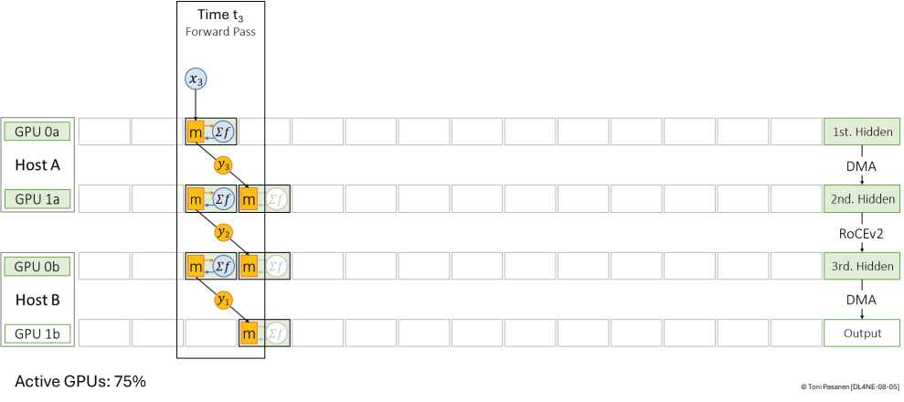
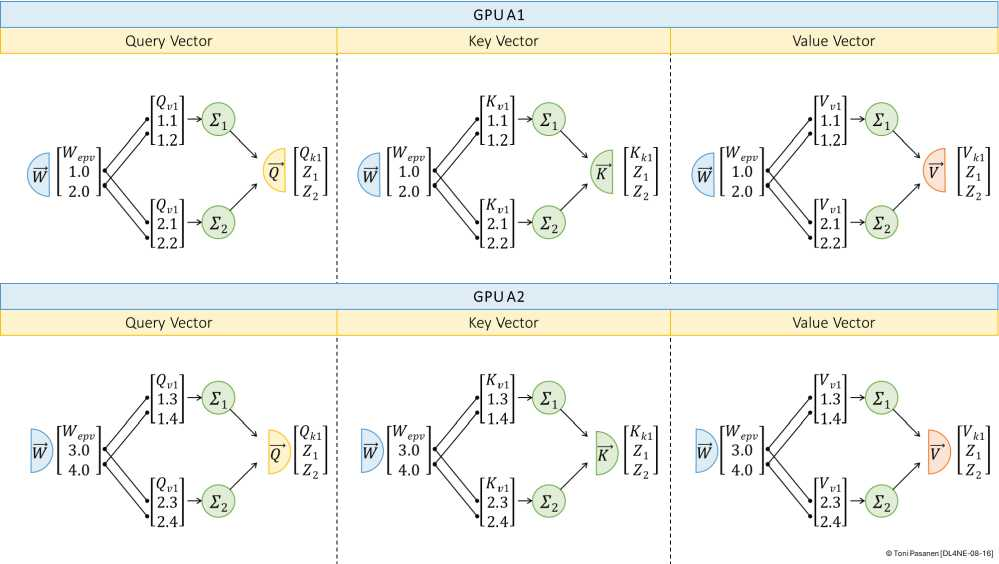

书 p181-191 以 4 GPU、4 micro-batch 演示：第1步仅 1 卡 active（25%），第4步 4 卡全 active（100%），尾部又跌回 25%。结论：micro-batch 越多气泡占比越小，但通信（激活前传+梯度回传）越频繁，网络时延直接吃掉收益。
把 Attention 的 QKV/输出投影、FFN 的两层矩阵按列/行切到多卡，每卡算一块，再 AllReduce/AllGather 拼回。优点单层可并行、时延低；缺点每层前向+反向都要通信 2-4 次，对带宽+时延最敏感，多用 NVLink/同机 + IB/RoCE 跨机。
实战 = 数据 × 流水 × Tensor 混合：Tensor 组内（8卡同机），流水跨组，数据跨 Pod。网工要会看并行配置反推流量：Tensor=细碎高频，流水=点到点接力，数据=周期性 AllReduce 风暴。


对照 Ten 步图，说出第1/4/10步各几卡 active，利用率多少。